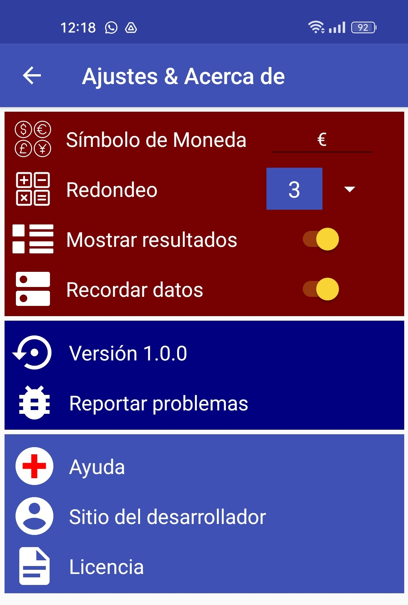

Compara precios es la APP que le ayudará a elegir el producto más barato en relación con otros productos de idénticas características que se venden con distintas cantidades de producto.
No te vuelvas a equivocar al elegir entre varios productos de similar calidad pero con diferentes cantidades de producto.
Vamos a ver como funciona.
Imagine que va al supermercado y ve el Kéfir con una oferta de 3 unidades por 4,50€, mientras que una sola unidad se vende a 1,68€. ¿Merece la pena la oferta?

Ahí es donde la APP “Compara precios” le puede ayudar.
En primer lugar se pulsa sobre el botón “Añadir artículos” y rellenamos los datos:
El nombre del producto(en realidad no hace falta, es opcional).
El precio.
La cantidad.
El número de unidades que vienen en el producto o en la oferta (por defecto 1).
Para meter mas productos a la comparación basta con pulsar sobre el botón “Añadir artículo” y meter sus datos.
¿Qué sale más económico?

En la sección “Artículos ordenados” aparecen los resultados ordenados partiendo de los más económicos. La información que se muestra es:
Nombre del producto.
Relación € de coste por Kg de producto.
Relación cantidad en Kg por cada euro de coste.
Puede ver que el “Item2” (nombre por defecto) es el primero, por tanto el más barato. Se corresponde con la oferta de 3 envases de 400 g. Sale más barato (3,75€/kg) que comprar uno solo por 1,68€ (4,2€/kg). Fíjese que para el resultado final se ha elegido como medida el kg, pero se podría haber puesto gramos (g).
Si quiere empezar de nuevo, pulse el botón “Limpiar” y se borrarán todos los productos.
Si quiere borrar solo un producto, pulse en la papelera que está al lado del producto.
Si quiere cambiar el orden de los productos en pantalla, utilice las flechas, aunque esto no va a cambiar los resultados.
El programa por defecto trabaja con 3 decimales y con euros (€), pero si necesita más precisión, basta con pulsar el botón de “Ajustes” y en “Redondeo” cambie el número de decimales. En la ventana de ajustes es donde podrá adaptar a su gusto la APP. Puede cambiar el tipo de carácter para la moneda (€ por defecto), puede elegir mostrar ordenados los resultados de mejor a peor y recordar los datos aunque cierre la APP.
Además en la misma ventana se informa de la versión de la APP, dónde reportar errores, la ayuda, el sitio web del desarrollador y la licencia.
Esta es la pantalla de Ajustes:

Vamos con otro ejemplo:
En el supermercado ve que el yougurt griego está en 2 formatos diferentes:
Formato de 6 envases de 125 gramos que cuesta en total 1,55€.
Formato de 1Kg que cuesta 2,30€.
¿Cuál es más barato? Es difícil de responder ya que comparar los precios directamente sería un error ya que tienen diferente peso total.

Así de fácil la APP nos resuelve la duda mostrando un resumen ordenado de mejor a peor precio, donde podemos ver que:
El griego 6: el pack de los 6 yogures, sale el kg a 2,067€/kg. Por un € nos dan 0,484 kg de procducto.
El griego 1: El envase, supuestamente de ahorro, al ser 1kg, cuesta a 2,3€/kg. Por un € nos dan 0,435 kg de producto.
Fijese que a la hora de meter un producto, en “Unidad” elegimos el tipo de medida (Peso, Volumen, Longitud, Piezas) y después para cada producto puede elegir la unidad concreta, por ejemplo, para peso puede elegir gramos (g), kilogramos (kg), toneladas (t), etc. Y en el resultado final “Artículos ordenado” puede elegir la unidad de medida que sirve para unificar criterios. En el ejemplo, los 6 yogures pesan 125 gramos cada uno y se eligió como medida gramos (g), el bote grande pesa 1kg y se eligió como medida kg. En el resultado final se eligió como medida comparativa kg.

Un último ejemplo, en una web se encuentra que hay 3 formatos de botella de agua, 33 cl, 50 cl y 1 litro.

Meta
los datos en la APP y ya sabrá en que envase le cuesta menos el
agua.
Fíjese que al meter los datos de cada producto, en 2 casos se tomó como unidad de medida “cl” (centilitros) y en otro “l” (litro).
En el resultado final, la unidad de medida que se eligió fue litros, pero podría haber sido centilitros o mililitros, no importa. El caso es que para el resultado final, la unidad de medida elegida tiene que ser una, la misma, de otra forma no tendría sentido compararlos.
P
ues
bien, resulta que la botella de 33 cl, que en la APP el usuario
introdujo con el nombre “item 33” (recuerde que no es
obligatorio), es la más barata.
Fíjese también que algún resultado aparece con una precisión de 5 decimales, esto es que porque en “Ajustes” se hizo el redondeo a 5. Usted elige la moneda, que por defecto es el euro (€) y el redondeo en los cálculos, que por defecto es 3.
Como puede ver, gracias a esta APP podrá elegir el producto más económico.
2025 Asturias, España (informiguel)